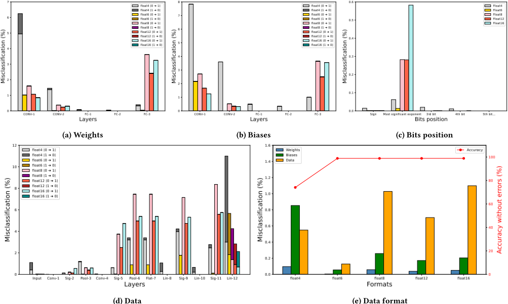
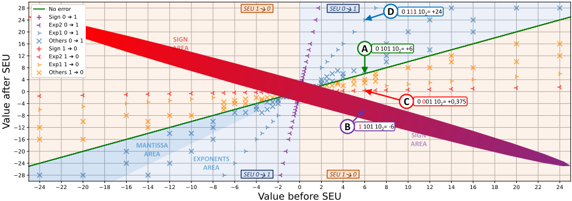
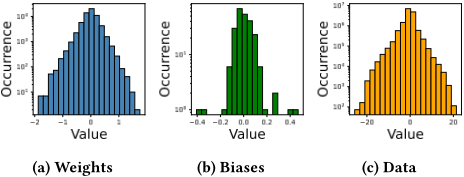
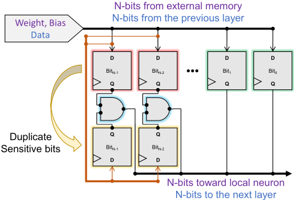
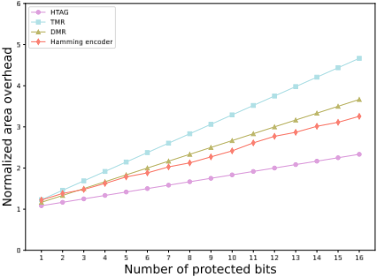
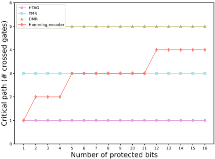

HiTAG-NN: Hardening Technique with AND Gates for Embedded Neural Networks
HTAG-eNN：基于 AND 门的嵌入式神经网络加固技术（Hardening Technique with AND Gates for Embedded Neural Networks）
简介
面向安全关键领域的嵌入式 NN 在推理时因瞬态故障产生 SEU，威胁推理可靠性，而已有敏感度分析多停留在高层且只关注权重等参数。本文在 PyTorch 实现的 LeNet-5（MNIST）上，对权重、bias、层间中间数据及输入图像做穷举 SEU 故障注入，覆盖 float4 至 float16 五种自定义 FP 格式，并量化翻转方向的影响：除最后一层外，0→1 翻转对分类结果的影响远大于 1→0，根源是 NN 数值集中于 0 附近。据此提出 HTAG：仅复制存储敏感位的 flip-flop 并插入单个 AND 门作 voter，两输入不同时输出 0，实现"强制归零"式轻量选择性加固。float6 (1,3,2) 格式下保护效率达 96.85%，面积与关键路径开销显著低于 TMR、DMR 与 Hamming 码；但最后一层因 1→0 翻转占主导而不适用，需与其他保护方法组合。
问题
安全关键领域的嵌入式 NN 在推理过程中因高温、高能电磁辐射等环境因素产生瞬态故障，翻转 flip-flop 中存储的值形成 SEU，并随执行传播最终改变推理决策；已有敏感度分析多只针对权重等参数、停留在高层，缺乏对层间中间数据与 SEU 翻转方向的精细量化，而 TMR/DMR/Hamming 码等保护方法硬件开销大。
方法
在 PyTorch 实现的 LeNet-5 上建立穷举 SEU 故障注入框架，覆盖权重、bias、层间中间数据与输入图像，比较 float4(1,2,1)、float6(1,3,2)、float8(1,4,3)、float12(1,4,7)、float16(1,5,10) 五种自定义 FP 格式，以与 golden 参考的分类差异标记敏感位；分析发现 NN 数值集中于 0 附近，0→1 翻转使值大幅偏离而 1→0 翻转使值趋近 0，故除最后一层外 1→0 翻转基本无害。基于此提出 HTAG：复制存储敏感位的 flip-flop，插入单个 AND 门作为 voter（两输入不同时输出 0），将 0→1 故障强制归零、放行基本无害的 1→0 故障；并在相同保护位数下与 TMR/DMR/Hamming 对比面积开销与关键路径（按穿越逻辑门数估算）。
关键结果
HTAG 在最容错的 float6 (1,3,2) 格式模型上保护效率达 96.85%，即故障注入显示仅 3.15% 损失
每个受保护位仅需 1 个额外 flip-flop 与 1 个 AND 门，关键路径仅增加 1 个组合 AND 门（TMR 的 voter 需 3 个逻辑门）
相同保护位数下与 TMR/DMR/Hamming 对比，HTAG 面积开销最低；DMR 关键路径因 voter 反馈回路受影响严重；Hamming 在保护位数少时硬件开销高（论文仅计编码器部分，为下界估计）
敏感位分析表明 sign 与最高权重 exponent 位敏感度最高（float4 除外），仅保护这两类位即可实现高保护水平并降低硬件开销
float6 (1,3,2) 为最容错数据格式；层间传输的中间数据总体比权重/bias 更易导致误分类
TMR、DMR、Hamming 码对单 bit SEU 可达 100% 纠正，HTAG 为 96.85%
创新点
区别于已有只分析权重/参数层敏感度的工作，本文将层间中间数据纳入穷举故障注入，并量化 SEU 翻转方向的影响（0→1 远比 1→0 有害）；保护上不同于 TMR/DMR/Hamming 的完全纠正思路，利用 NN 数值集中于 0 的分布特性提出"强制归零"的单 AND 门 voter，以远低于现有方法的面积与关键路径开销换取 96.85% 保护效率，属于由精确敏感度分析驱动的选择性轻量加固。
团队参考意义
相关度级别：medium
命中能力域：2.2 RTL 设计与实现
理由：团队核心是 LPDDR/HBM4/UCIe 等存储与互连 IP 的架构、RTL 与验证交付，本文面向嵌入式 NN 推理的 SEU 加固，不直接命中团队产品与技术栈；但 HTAG 本质是 RTL 级可综合加固实现（FF 复制 + 门插入）并附带面积/关键路径权衡分析，与 2.2 的可综合 RTL 设计相关。其"敏感位分析驱动的选择性加固"方法及 TMR/DMR/Hamming 开销对比流程，对团队在功能安全需求下对 IP 内关键寄存器/FSM 做轻量 SEU 保护有借鉴价值；穷举/统计故障注入思路对 IP 可靠性验证亦有边际参考。需注意其"强制归零"语义依赖 NN 数值集中于 0 的统计特性，不能直接套用于任意控制逻辑。
建议动作：作为方法参考存档
中文全文

HTAG-eNN: Hardening Technique with AND Gates for Embedded Neural Networks
Wilfread Guilleme, Angeliki Kritikakou, Youri Helen, Cédric Killian, Daniel Chillet
To cite this version:
Wilfread Guilleme、Angeliki Kritikakou、Youri Helen、Cédric Killian、Daniel Chillet。HTAG-eNN：面向嵌入式神经网络的基于与门的加固技术。DAC 2024 - IEEE/ACM 设计自动化会议，2024年6月，美国旧金山。⟨10.1145/3649329.3657329⟩。⟨hal-04689194⟩
HAL Id: hal-04689194 https://inria.hal.science/hal-04689194v1
提交于 2024 年 10 月 15 日
HAL 是一个多学科开放获取档案库，用于存储和传播科学研究文献，无论这些文献是否已发表。这些文献可能来自法国或国外的教学与研究机构，也可能来自公立或私立研究中心。
多学科开放档案库 HAL 旨在存储和传播研究级别的科学文献，无论其是否已发表，这些文献来自法国或国外的教学与研究机构，以及公立或私立实验室。
根据知识共享（Creative Commons）CC BY 4.0 - 署名 - 国际许可协议分发
HTAG-eNN: Hardening Technique with AND Gates for Embedded Neural Networks
Wilfread Guillemé wilfread.guilleme@inria.fr IRISA/INRIA，雷恩大学（Univ. Rennes），法国拉尼翁 Angeliki Kritikakou angeliki.kritikakou@irisa.fr IRISA/INRIA，法国大学研究院（IUF），雷恩大学（Univ. Rennes），法国雷恩 Youri Helen youri.helen@intradef.gouv.fr DGA MI，法国布吕兹
Cédric Killian
cedric.killian@univ-st-etienne.fr 于贝尔·库里安实验室（Lab. Hubert Curien），法国国家科学研究中心（CNRS），圣艾蒂安让·莫奈大学（Univ. Jean Monnet Saint-Étienne），法国
Daniel Chillet
ABSTRACT
嵌入式神经网络（NNs）因单粒子翻转（SEUs）而面临重大挑战，其可靠性因此受到损害。为应对这一挑战，已有研究工作对 AI 模型的 SEU 层敏感性进行了研究。与这些停留在高层次的技术不同，我们提出了一种更为精确的分析，并指出：除最后一层外，从 0 翻转到 1 的故障会显著影响分类结果。基于这一特定行为，我们提出了一种简单的硬件模块，能够检测并缓解 SEU 的影响。所得结果表明，对于适用于嵌入式系统的 LeNet-5 CNN 推理模型，HTAG 的保护效率接近 96.85%。该结果可通过在分类层采用其他保护方法得到进一步提升。此外，与现有方法相比，该方案显著降低了面积开销和关键路径。
KEYWORDS
容错、优化、保护、冗余、鲁棒性
1 INTRODUCTION
众多应用领域都在使用人工智能算法（基于神经网络，NN）来解决多种任务，例如图像与语音识别、自然语言处理以及自主控制系统。当这些算法被用于面向安全关键领域的嵌入式系统时，可靠性变得至关重要。因此，必须保护这些系统免受可靠性威胁，尤其是由环境条件（例如高温和高能电磁辐射）引起的瞬态故障，这类故障被认为是最重要的故障来源之一 [1]。此类故障被暂时性地注入硬件组件后，会翻转触发器中存储的值，从而导致单事件翻转（SEU）。SEU 可能在系统执行过程中传播，最终影响 NN 的输出，改变最终的推理决策。
近年来，随着 NN 规模的显著增大，在 CNN 推理过程中会产生海量数据流。这一演进促使人们设计出量身定制的专用硬件架构
2 RELATED WORK
现有若干工作通过故障分析与防护来评估 NN 系统的可靠性。在故障分析方面，这类论文聚焦于 NN 参数，尤其是权重 [4] [5]。考虑到逐层执行 NN 的系统，中间数据需要被临时存储，因此同样对 SEU 敏感。[11] 中提出的面向深度学习加速器的分析框架，能够提取可能的数据通路以及一些包含权重、偏置和层间数据的触发器。[12] 的作者针对不同的 NN 和不同的数据格式（即定点和浮点（FP））开展了研究。其他方法则探讨了 CNN 权重的 IEEE754 数值在 SEU 作用下的位关键性 [13]。他们表明，FP 格式的敏感位更少，但误差可能更大，因为最高有效位对编码值具有指数级影响。ARES [14] 框架在考虑存储器中故障的情况下，探索了不同模型、层和激活之间的故障易感性。由于故障注入仿真可能非常耗时，[15] 提出了统计故障注入方法，并证明仅注入约 1% 的可能故障，就能获得接近穷举结果的 CNN 可靠性估计。这些先前的研究清楚地表明，SEU 敏感性随故障在 NN 架构中所处位置的不同而不同。然而，尽管已有研究注意到 SEU 方向上存在不对称性 [6]，但目前尚无研究对从 0 翻转到 1 的 SEU 究竟会造成多大问题进行量化。
在故障防护方面，典型方法基于不同层级的硬件冗余或信息冗余。架构级弹性可以通过复制隐藏神经元及其相关连接来实现 [16]。此外，还可以通过检测更敏感的元件并复制输入、偏置、权重 [17] 以及关键神经元 [18] 来实现选择性复制。ApFT [19] 采用脉动阵列数据流架构来解决 CNN 中的容错问题，其在考虑特定架构特性的同时，通过复制卷积滤波器来实现这一点。微架构级弹性则基于数据精度调整（例如以不同格式存储权重 [20]）、选择性位加固（例如在定点算术下对最高有效位（MSB）进行加固 [12]）以及计算单元的复制（例如仅对影响行波进位加法器较高位输出的单元进行复制 [21]）。其他方法通过减轻硬件故障对 CNN 运算的影响来提升 AI 模型的弹性。例如，FT-ClipAct [22] 针对影响存储网络权重的存储器的故障，通过阈值机制约束过高的权重值。MOZART+ [23] 应用于脉动阵列内的输出固定数据流，其中使用多路选择器系统性地关闭易受故障影响的处理单元。
基于其他研究的发现，我们针对不同的浮点（FP）格式开展了一项补充研究，其中考虑了层与层之间传输的数据。我们的分析还从位变化方向的角度探讨了 SEU 的影响，并揭示出从 0 翻转到 1 的 SEU 对分类结果的影响比从 1 翻转到 0 的 SEU 更为显著。这些信息被用于指导所提出的故障防护技术的设计，该技术通过有选择地复制触发器并插入逻辑 AND 门来缓解 SEU 的影响，同时硬件开销极低。
| Layer type | Layer type | # Data | Output shape | # Parameters |
|---|---|---|---|---|
| Image | Input | 784 | [1, 28, 28] | 0 |
| CONV-1 (Convolution) | Conv-1 | 4,704 | [6, 28, 28] | 156 |
| CONV-1 (Convolution) | Sig-2 | 4,704 | [6, 28, 28] | 0 |
| CONV-1 (Convolution) | Pool-3 | 1,176 | [6, 14, 14] | 0 |
| CONV-2 | Conv-4 | 1,600 | [16, 10, 10] | 2,416 |
| CONV-2 | Sig-5 | 1,600 | [16, 10, 10] | 0 |
| CONV-2 | Pool-6 | 400 | [16, 5, 5] | 0 |
| FC-1 (Fully Connected) | Flat-7 | 400 | [400] | 0 |
| FC-1 (Fully Connected) | Lin-8 | 120 | [120] | 48,120 |
| FC-1 (Fully Connected) | Sig-9 | 120 | [120] | 0 |
| FC-2 | Lin-10 | 84 | [84] | 10,164 |
| FC-2 | Sig-11 | 84 | [84] | 0 |
| FC-3 | Lin-12 | 10 | [10] | 850 |
| FC-3 | Soft-13 | 10 | [10] | 0 |
| Output | Total | 15,012 | 15,012 | 61,706 |
| Layer type | Layer type | # Data | Output shape | # Parameters |
3 SEU-SENSITIVITY ANALYSIS
In this section, we present the analysis conduct on simple classification LeNet-5 [10], based on convolution, pooling, linear and activation layers. Same conclusions could be obtained for more bigger CNNs.
3.1 Use-case Neural Network architecture
我们的用例是一个使用 MNIST 数据库训练、并采用 PyTorch 库实现的 LeNet-5 [10] 模型。表 1 描述了其特性。目标模型由两个卷积层和随后的三个全连接层组成。神经网络（NN）参数在训练阶段确定，且仅位于这些层上。每层之后都会应用一个激活函数，例如 sigmoid。每个卷积层之后还使用平均池化层来缩减数据形状。最后一层实现 softmax 函数用于分类，为每个类别分配一个概率。概率最高的类别即代表 NN 的分类结果。
考虑到 NN 在嵌入式系统上执行，我们将模型参数和数据调整为缩减的浮点（FP）格式。更准确地说，我们使用多种自定义数据格式进行仿真，即 float4 (1, 2, 1)、float6 (1, 3, 2)、float8 (1, 4, 3)、float12 (1, 4, 7) 和 float16 (1, 5, 10)。记号 (S, E, M) 表示 S 为符号位、E 为指数部分、M 为尾数部分。例如，float8(1, 4, 3) 格式对应 1 位符号位、4 位指数部分和 3 位尾数部分。
3.2 Fault injection framework
我们考虑在推理过程中发生的单粒子翻转（SEU），并向参数（即权重和偏置）以及层间传输的中间数据注入故障。需要注意的是，对于参数而言，故障注入实验仅限于卷积层和全连接层，因为只有这些层才包含此类参数。相反，中间数据则可以在所有层上选取。故障一旦注入，便通过更新将每一层映射到其参数的 Python 字典对象，使模型以这些新参数执行。然而，向数据中注入故障则略有不同，因为神经网络（NN）

内部的数据在默认情况下无法通过 PyTorch 直接访问。在这种情况下，需要逐层执行 NN，以获取并修改作为故障注入目标的数据。进入 NN 之前的数据（即表示数字的灰度图像）同样被纳入故障注入实验。
SEU 注入实验是穷举式的，因而会遍历所有可能发生故障的位。将所得结果与黄金参考进行比较，该黄金参考由 NN 的无故障推理产生。如果两次执行的分类结果存在差异，则该故障位被视为敏感位，并被标记为需要保护的位。
3.3 Sensitivity per layer and data type
故障注入实验所得结果表明，所研究 NN 的各层对 SEU 的敏感度并不相同。对于权重而言，如图 1a 所示，敏感层似乎是位于网络输入端的卷积层以及最后一个线性层。当故障被注入到卷积滤波器的权重中时，该故障会影响整幅图像。因此，权重层面的故障可能对网络的准确率产生显著影响。此外，我们可以注意到，最后一个线性层同样是敏感的，因为它接近最终的分类决策。
图 1b 中针对偏置观察到了类似的结果。然而，与权重相比，偏置的数量较少，因为对于卷积层而言每个通道只有一个偏置，而对于线性层而言所有神经元仅有一个偏置。值得强调的是，敏感层也正是参数最少的那些层。
图 1d 展示了层间传输数据的相关结果。我们观察到，各层对 SEU 在传输数据上的敏感度各不相同，激活层尤其如此。例如，对于产生 0 到 1 之间数值的 sigmoid 函数，位权较高的位上发生故障可能导致输出值显著增大，进而可能危及后续各层。此外，我们观察到故障越靠近 NN 输出层，故障敏感度越高。这是由架构模型设计所致：该设计逐层减少层间传输的数据量，最终产生对应于所定义 MNIST 类别的 10 个数值。
图 1c 展示了故障位位置对误分类影响的相关结果。该图证实，符号位和指数位对 NN 准确率的影响最大。所得结果与 [4] [12] 等类似研究的结果一致。除 float4 外，符号位和位权最高的指数位在所有格式下均表现出高敏感度。因此，只需考虑对这两类位进行保护，而无需保护 FP 格式中的所有位，即可在降低硬件开销的同时实现高水平保护。

图 1e 汇总了所有故障注入实验的结果，即所有 FP 格式下的权重、偏置和中间数据的结果。从该图可以得出结论：在网络层之间流动的数据通常更容易导致误分类。这一观察可以解释如下：以一个全连接层为例。当故障被引入到某个权重上时，其影响仅限于单个连接。对于偏置而言，故障会被后续的激活函数部分缓解。然而，对于在两层之间传输的数据，故障会影响涉及该数据的所有连接。上述情况均成立，但使用 4 位 FP 格式的神经网络除外，不过该网络无法达到较高的分类率。
总体而言，图 1 表明 float6 (1, 3, 2) 格式对故障的容忍度最高。需要注意的是，这种浮点格式的位宽非常适合此类 NN。一方面，更小的格式（如 float4）所含位数不足，无法保证编码值具有足够的精度。另一方面，float8、float12 和 float16 格式则包含过多的无效位，从而导致更高的硬件实现成本。
3.4 Impact of the SEU direction
This section presents the fault direction impact on the NN accuracy, i.e., flipping a bit from 0 to 1 or from 1 to 0. Figure 1 also highlights the SEU direction impact. Results of the fault injection campaign show that SEUs from 1 to 0 cause very few NN misclassifications. To better understand this observation, firstly, we recover all possible values when executing the fault-free model, and then, we inject faults on all these values. Figure 3 presents all possible values during the fault-free NN inference. The histogram 3a is referring to weights and it shows that typical values range of approximately +/- 2. The histogram 3b corresponds to biases and their values tend to fluctuate within a narrower range of approximately +/- 0 . 5. However, data, whose values are depicted in histogram 3c, traverse through different network layers, and thus, values can span from +/- 24. Overall, histograms show that NN operates with values centered near 0.

Figure 2 presents the impact of the SEU on the range of values for weights, bias and data considering the float6 (1, 3, 2) format. As we can observe from this figure, bits toggle from 0 to 1 often lead to important deviations from the original values represented in the blue areas of the figure. The same observation holds for faults impacting the exponent bits. The value impacted by a fault is consistently moved further compared to faults impacting the mantissa bits. This is a logical result given that the mantissa is less significant, as illustrated by the lower left part of the figure. Furthermore, the histogram analyses, regarding the values of weights, bias and data, have shown that NN mainly operates with values close to zero. Therefore, when SEU change a value from 1 to 0, it tends to bring the value closer to zero, excluding the sign bit. This observation clarifies why SEUs from 1 to 0 do not have a significant impact on the NN classification. To further analyse the impact of SEUs, we consider the following example: let consider the value 6, expressed as 0 101 10 2 in float6 (1, 3, 2) format, denoted as point A in Figure 2. When a bit inversion occurs on the initial sign bit, the value immediately changes to -6, marked as point B. An inversion on the most significant exponent bit, results in the value shifting towards zero, i.e. 0.375 represented by point C. Lastly, a change from 0 to 1 in a bit causes a sudden surge in the value to 24 (point D). Upon close examination of this figure, it becomes clear that if a fault affects a bit, it is preferable to considered this bit as zero to HTAG-eNN: Hardening Technique with AND Gates for Embedded Neural Networks reduce the fault impact. This aligns with the typical NN working range and has a lesser disruptive impact on the network.

4 HARDWARE PROTECTION
本节介绍基于与门的加固技术（Hardening Technique with AND Gate，HTAG）。该技术以第3节中给出的分析为依据，因而考虑了层的敏感性以及取决于数据类型的比特位。所提出技术的主要思想是复制所有存储敏感位的触发器，并添加一个充当表决器模块的与逻辑门。根据真值表，当两个输入位不同时，表决器倾向于输出零逻辑状态。如果一个等于0的位受到故障影响，即被翻转为1，表决结果将为0，故障影响因此得到纠正。相反，如果一个等于1的位受到故障影响，即被翻转为0，表决结果将产生0。这导致故障得以保持，而如第3节所示，该故障通常对分类结果没有影响。
图4展示了HTAG的硬件实现。正如3.4小节中关于SEU方向影响的研究所强调的，用0替换1对NN分类不会造成严重后果。该策略实现简单，仅需极少的额外硬件资源，并且关键路径仅增加一个组合与门。
我们进一步从以下几个方面评估所提出的HTAG方法：i) 保护的有效性，ii) 面积开销，以及iii) 与三模冗余（TMR）、双模冗余（DMR）和汉明码等常见保护技术相比的关键路径。为了进行公平的分析，我们假设所有技术所保护的位数相同。
在保护有效性方面，TMR、DMR和汉明码在发生SEU错误时能够达到100%的成功率，因为它们能够纠正一个故障位。然而，如果目标应用能够容忍一定的错误或资源有限，HTAG则是一种有前景的解决方案，因为它显著降低了硬件开销。故障注入实验表明，基于float6格式的抗故障能力最强的模型仅损失3.15%，如表2所示。此外，对图1d的分析表明，HTAG技术对最后一层的效果较差，在该层中，大多数误分类是由SEU从1翻转到0引起的。这
| Format | # Faults | # Errors | # 0 ⇒ 1 | # 1 ⇒ 0 | HTAG |
|---|---|---|---|---|---|
| Float4 | 3,057,440 | 6,159 | 5,559 | 600 | 90.25% |
| Float6 | 4,586,160 | 1,364 | 1,321 | 43 | 96.85% |
| Float8 | 6,114,880 | 15,984 | 15,931 | 53 | 99.67% |
| Float12 | 9,172,320 | 16,328 | 16,275 | 53 | 99.68% |
| Float16 | 12,229,860 | 32,915 | 32,835 | 80 | 99.76% |
| Format | # Faults | # Errors | # 0 ⇒ 1 | # 1 ⇒ 0 | HTAG |

(a) Area overhead

(b) 关键路径估计
一结果得以解释，因为最后一层末端、softmax函数之前的数据除预测类别外均为负值（在直方图3c中不可见）。因此，存在许多处于逻辑状态1的符号位，其故障只能向逻辑状态0方向翻转。这会影响HTAG的保护性能。因此，将HTAG与应用于最后一层的另一种保护方法相结合是一种有前景的解决方案。
HTAG因其在保护所需硬件开销方面的高效性而脱颖而出。事实上，HTAG仅需一个额外的逻辑门和一个触发器即可实现位复制，如图5a所示，这与其他保护技术相比要少得多。虽然三模冗余（TMR）是最有效的位纠正技术，但它也是成本最高的技术。至于双模冗余（DMR），尽管与三倍复制相比它减少了触发器数量，但其关键路径受到严重影响。最后，汉明码在需保护的位数非常少时硬件开销较高，只有当需保护的位数增多时才变得具有吸引力。正如敏感性分析所示，需保护的敏感位数很少，因此，由于其硬件开销较高，该方法不适用于这种情况。需要注意的是，本文所给出的关于汉明码开销的结果仅考虑了与编码器相关的部分，因而得到的是硬件开销的下限估计。
HTAG的另一个显著优势是其对关键路径时间的影响较小。图5b通过统计所穿越的逻辑门数量，对这三种方法的硬件实现所导致的关键路径影响进行了估计。TMR的表决块需要三个逻辑门，与之不同，HTAG只需一个简单的逻辑门即可缓解故障。至于DMR，尽管与三倍复制技术相比它减少了触发器数量，但由于表决块中存在反馈回路，其关键路径时间受到严重影响。至于汉明码，其关键路径时间随需保护位数的增加而逐渐增大，因为计算奇偶校验位需要更多的XOR门。
5 CONCLUSION AND DISCUSSION
在本文中，我们首先对影响可用于嵌入式系统的 LeNet-5 模型的单粒子翻转（SEU）进行了全面分析。我们观察到，该卷积神经网络（CNN）的不同层之间存在敏感性差异。卷积层和输出层被确定为对神经网络（NN）参数发生的故障最为敏感的层。对于中间数据而言，故障发生的位置越靠近输出，其敏感性就越高。通过研究 SEU 的方向，我们观察到该 NN 对导致位从 1 翻转为 0 的故障具有更强的容忍度。基于这一观察，我们提出了 HTAG，该方法复制敏感位并添加单个 AND 逻辑门进行保护。与现有方法相比，HTAG 以几乎可以忽略的硬件开销和极小的关键路径增加，提供了稳健的加固性能。它使错误数据更接近于零附近的值，而这类值正是 NN 的典型取值。所获得的结果表明，对于使用 float6 数据格式的容错性最好的模型，HTAG 实现了 96.85% 的保护效率，且硬件开销和关键路径开销较低。这是在考虑到最后一层不适合采用 HTAG 保护的情况下。
我们的故障注入分析受到所需仿真时间的限制。为解决这一局限，作为未来工作，我们将考虑仅在最高有效位中注入故障，因为已有研究表明其余位的敏感性较低。此外，为应对更大的 NN 架构，可以使用统计故障注入来替代穷举故障注入。作为未来工作，我们可以探索 HTAG 方法在更大规模 NN 上的适用性，并评估其针对多位翻转（MBU）以及发生在不同层上的多个 SEU 的保护有效性——当系统逐层执行 NN 时，这是一种可能出现的场景。